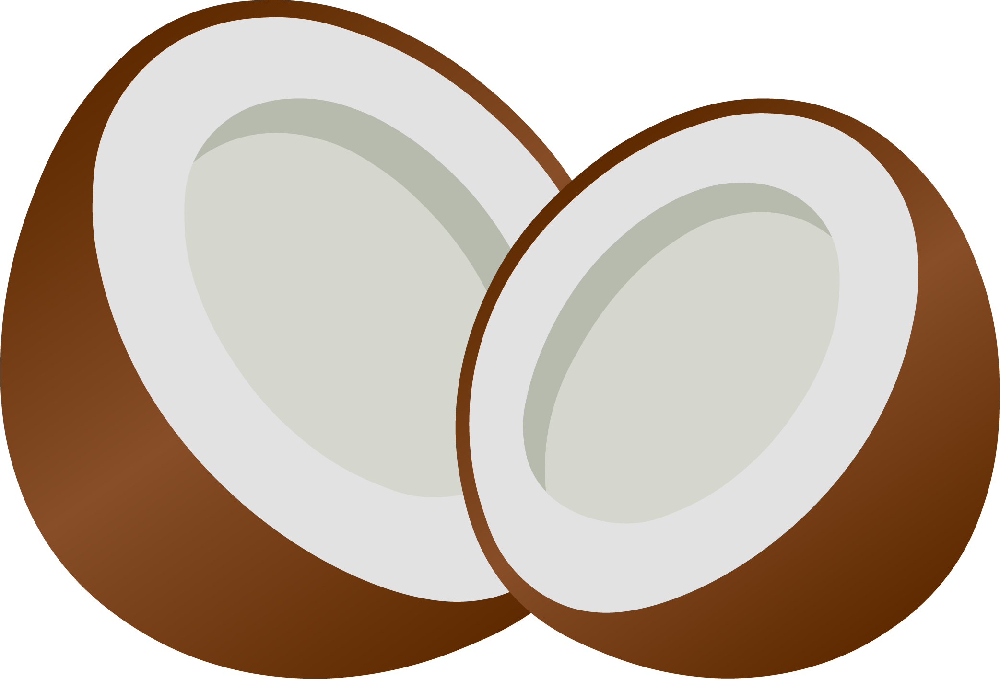

Coconut

A coconut is indeed a fruit, specifically a drupe. A drupe is
a type of fruit that has three layers: an outer layer, a fleshy middle
layer, and a hard inner layer surrounding the seed. In the case of a
coconut:
Inside the coconut, you'll also find coconut water, which is the liquid enclosed within the seed. This combination of layers and the seed inside makes the coconut a drupe, and it's one of the largest and most well-known drupe fruits in the world. While it's often referred to as a "coconut fruit," it's more accurately described as a drupe because of its specific botanical characteristics.
-
The outer layer is the thick, fibrous, and hairy husk.
-
The fleshy middle layer is the edible part known as coconut meat
or copra.
- The hard inner layer is the woody shell that protects the seed.
Inside the coconut, you'll also find coconut water, which is the liquid enclosed within the seed. This combination of layers and the seed inside makes the coconut a drupe, and it's one of the largest and most well-known drupe fruits in the world. While it's often referred to as a "coconut fruit," it's more accurately described as a drupe because of its specific botanical characteristics.